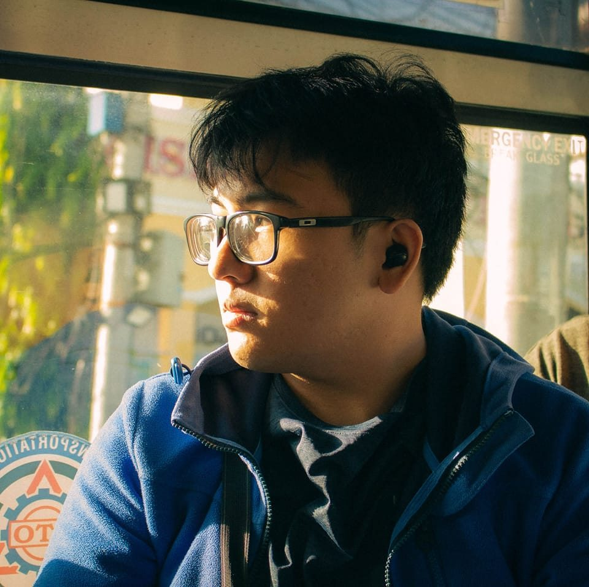

About Me:
Name: Carlos Vincent L. Gabi
Birthday: March 13, 2006
Interests & Hobbies: Biking, Long Walks, Gaming,
Computers, Pets, and Coding
Why I chose Computer Science: I chose computer science
because of my long experience and interest in computers,
as well as the multiple opportunities that come with this
course.